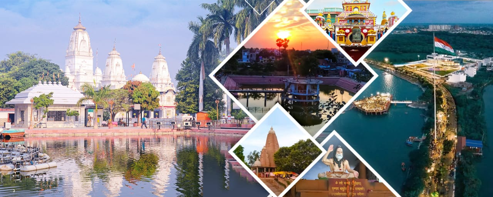
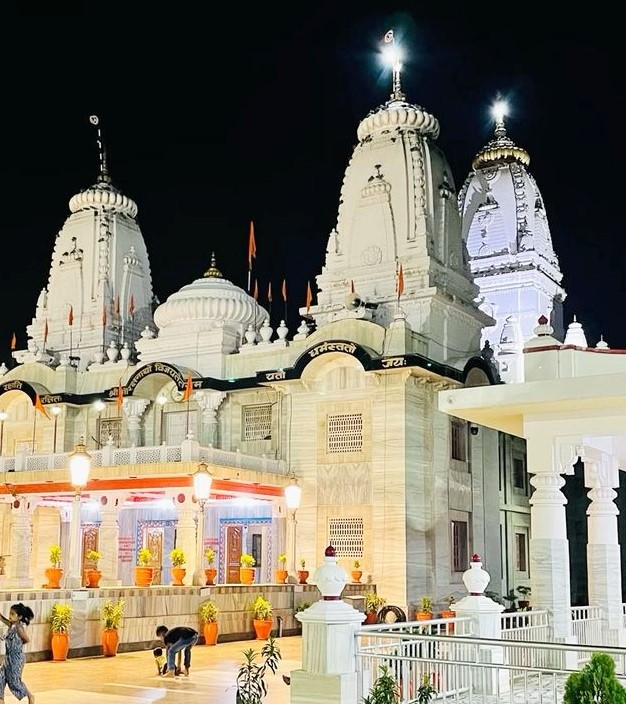
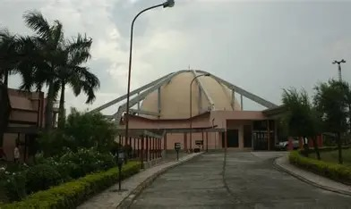
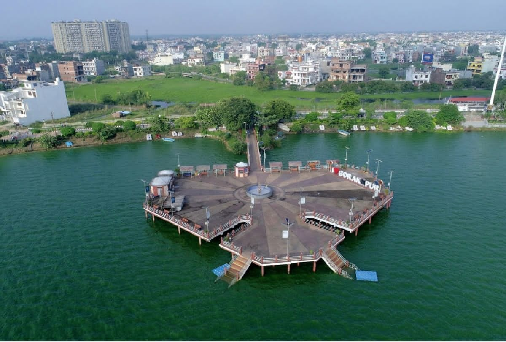
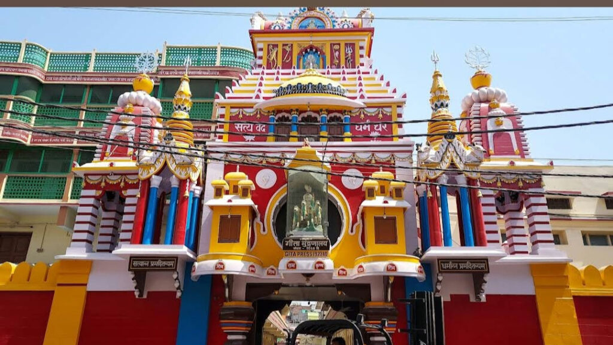

Uttar Pradesh
A Glimpse of the Entire Nation
Gorakhpur: A city steeped in History and Culture

Gorakhpur is also identified with the Gita Press, the world famous publisher of the Hindu religious books. The most famous publication is 'KALYAN' magazine. All 18 parts of Shree Bhagwat Gita is written on its marble-walls. Other wall hangings and paintings reveal the events of life of Lord Ram and Krishna. The Gita Press is fore-front in dissemination of religious and spiritual consciousness across the country.
Gorakhpur is also the Head Quarter of Air Force and known for Cobra Squadran.The present-day city is a center of industry and trade in agricultural products. Industries include textile making, printing, sugar milling, and railroad maintenance. Gorakhpur is a transportation hub, located at the junction of several roads and rail lines. It also has a small regional airport for domestic flights. Embankments built along the river protect the city from flooding.
The place attracts a large number of devotees and tourists on the daily basis. The most important religious place are:
Gorakhnath Temple: A major spiritual center dedicated to Guru Gorakhnath, a saint of the Nath tradition.Gorakhnath Temple is one of the important place of the gorakhnath sect which has many temples across india. It offers a lot of facilites for poor like free medical and education.Visited the temple in the evening. The view was mesmerizing with the lights. The complex is very clean with proper space. The sarovar is excellent. Overall not to miss the darshan in your itenary for GorakhpurVery few temples in India revel in the peace and calm of Gorakhnath temple. It is extremely well maintained, very clean, and marked with signages all across. The trust managing the temple is directly controlled by the precent CM of the state, Yogi Adityanath, which makes this monument a well preserved pilgrimage of Hinuduism.

Gorakhpur Zoo: The Gorakhpur Zoo, officially the Shaheed Ashfaq Ullah Khan Prani Udyan, is a zoological park in Gorakhpur, Uttar Pradesh, India, named after the famous freedom fighter Ashfaqullah Khan. Opened in March 2021, it is the first such park in Purvanchal (eastern Uttar Pradesh) and the state's third-largest zoo. Located near the Ramgarh Tal, the zoo features a diverse collection of wildlife, conservation facilities, and public amenities like an aquarium, butterfly park, 7D theatre, and cafes.

Veer Bahadur Singh Planetarium:A modern planetarium offering space shows, popular among students and tourists. The Veer Bahadur Singh Planetarium, also known as Taramandal, is a major astronomical attraction in Gorakhpur offering immersive shows about the solar system, stars, and space missions on a large, digital-technology-equipped dome with a 395-person seating capacity. Managed by the Council of Science & Technology, it provides educational exhibits, models of celestial bodies, and telescopes for observing the night sky. It is a hub for space exploration and education for people of all ages. Nice place to visit if you are science lover.The Price of ticket for entering in this planetariums is only 25 rupees. So price of the ticket is not very expensive. This is very good place for kids and teens.

Nauka Vihar: A vast lake formed by the Rapti River's shifting course, great for boating and views.The region was known as Ramgram, and the Rapti River flowed through the area that is now Ramgarh Tal. You can enjoy water laser show in the evening,instrumental song etc. A boating club near Ramgarh Tal offering paddle and motor boat rides. Nauka Vihar (Boating Center) at Ramgarh Tal is situated in south-east Gorakhpur. For outings after the hustle-bustle of the city crowd, it may be one of the best places to enjoy in the evening or morning. The Boating Center may be one of the best attractions at Nauka Vihar. There is a rounded-tower-type place over the water from where you can take a boat for a ride.

Gorakhpur Railway Station:Gorakhpur Junction railway station is home to the world's second longest railway platform, measuring 1,366.33 meters, and is the headquarters of the North Eastern Railway. The station serves the city of Gorakhpur in Uttar Pradesh and has been upgraded with modern facilities like escalators, Wi-Fi, and LED displays to provide Class A1 passenger amenities. It has world's second longest railway platform after Hubballi Junction railway station. The station offers Class A+ railway station facilities.

Geeta Press:World's largest publisher of Hindu religious scriptures like Ramcharitmanas & Geeta. Gita Press was established on 29 April 1923 in Gorakhpur, by Jaya Dayal Goyanka, Hanuman Prasad Poddar, and Ghanysham Das Jalan . Its primary goal is to spread Hindu teachings by publishing texts like the Gita, Ramayana, Upanishads, and other spiritual and character-building works. Gita Press operates without soliciting donations or accepting advertisements, relying on the sale of its low-priced publications to fund its operations.

Best time to visit Gorakhpur
The best time to visit Gorakhpur is from October to March, with the winter months being particularly pleasant.During this period,the weather is cool and comfortable, making it ideal for sightseeing and outdoor activities. These Months are also great because many festivals happens
during this time like: Makar Sankranti, Janmashtami, Khichdi Mela.
How to visit Gorakhpur?
To visit Gorakhpur, you can fly to nearby airports like Delhi or Lucknow, then take bus or Taxi to Gorakhpur. You can also travel by train to Gorakhpur Station or take a bus or private Taxi from major cities like Lucknow, Varanasi or Kanpur. Once you visit Gorakhpur, use local transport like E- rickshaws, Auto-rickshaws or rapido ride are affordable and readily available for moving around the cities as per your comfort. Many important sites and temples are within walking distances of each other, making it a viable way to explore the city.
More significant locations around Gorakhpur
There are few more beautiful places in Gorakhpur like, Railway Museum , City Mall, Kushmi Forest, Neernikunj Water Park, Vishnu Mandir, Nehru Park, Buddha Museum. This places shows the history of Gorakhpur through of old trains and items which are palces in museum. If you want to know more about Gorakhpur and about its history you should visit these places for sure. These places are nearest to Gorakhpur so you can take auto-rickshaw or rapido-ride to reach there.